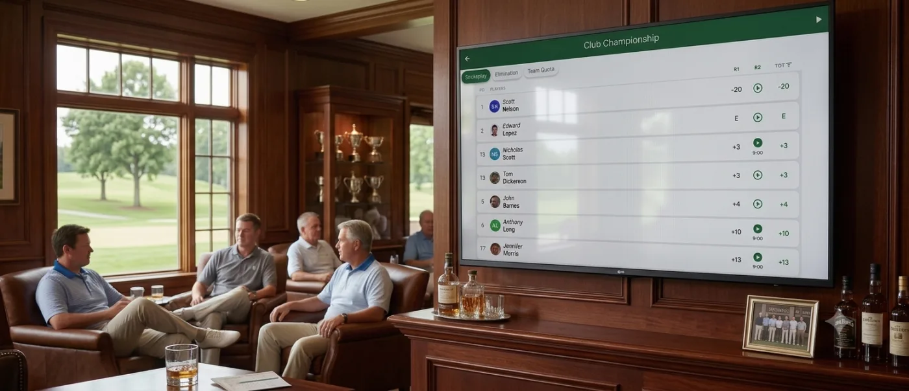
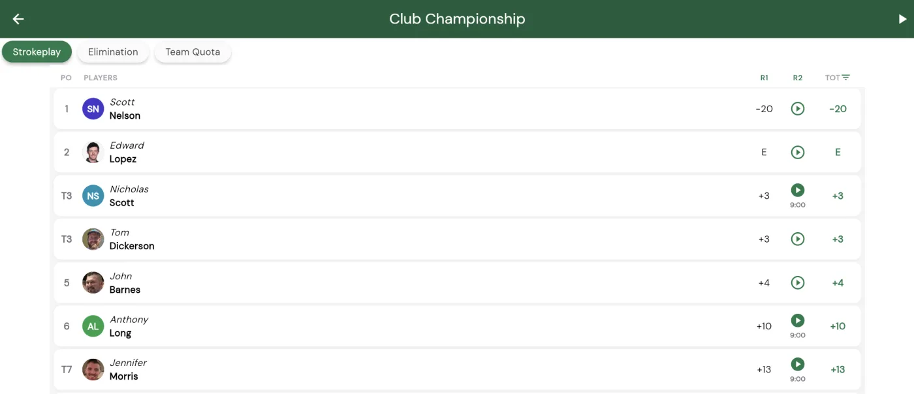
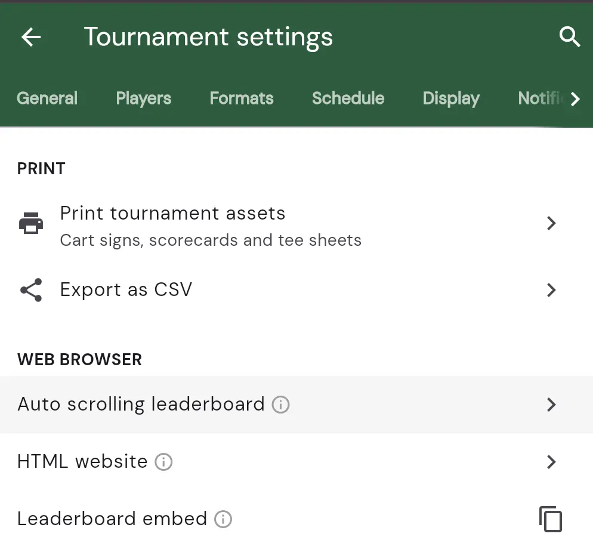

The auto-scrolling leaderboard
Nothing sets the mood at the turn or the post-round dinner like live standings on the big screen. Squabbit’s auto-scrolling leaderboard is built exactly for that: a full-screen view of your tournament results that scrolls itself, top to bottom, and keeps cycling through every format and flight without anyone touching the screen. Put it on the clubhouse TV, walk away, and let the leaderboard run the show.

What it does
The auto-scrolling leaderboard is a big-screen version of your normal tournament standings, made to run on a TV. Once you start it, it:
- Slowly scrolls the leaderboard from the top down to the last player, pausing briefly at the top and bottom so everyone can read the whole list.
- Moves through each of your flights in turn, then advances to the next format you’re running, and loops back to the start, so a multi-format event (say Strokeplay plus Skins) rotates through all of them automatically.
- Stays in sync with live play. As scores come in, the standings update on screen on their own.
You can also drive it by hand. Tap any format or flight chip along the top to jump straight to that leaderboard, and use the play/pause button in the top corner to stop and start the scrolling whenever you like.

Starting the auto-scrolling leaderboard
Open your tournament and tap the gear icon to open its settings. Scroll down to the section and tap .

The full-screen leaderboard opens on the tournament you’re in. Tap the play button in the top corner to begin scrolling. That’s it: the leaderboard takes over from there.
Putting it on a TV
The auto-scrolling leaderboard shines on a big screen. The simplest way to get it there is to open your tournament in a web browser on a device connected to the TV, then launch the auto-scrolling view the same way you would in the app.
Head to app.squabbitgolf.com on a laptop, mini PC, or smart-TV browser plugged into the clubhouse screen, sign in as the organizer, open your tournament’s settings, and tap . Put the browser into full-screen mode so only the leaderboard is showing, press play, and you’re set for the day.
While it’s running
You can leave the leaderboard scrolling on its own, or step in any time:
- Jump to a format or flight. Tap a chip along the top to switch to that leaderboard right away.
- Pause and resume. Use the play/pause button in the top corner to freeze the scroll on a particular screen, then start it back up when you’re ready.
When you’re done, just back out of the view to return to your tournament. Everything else about the tournament keeps working exactly as before. This is only a display.
Enjoy the show!